I vostri 4 libretti di attività
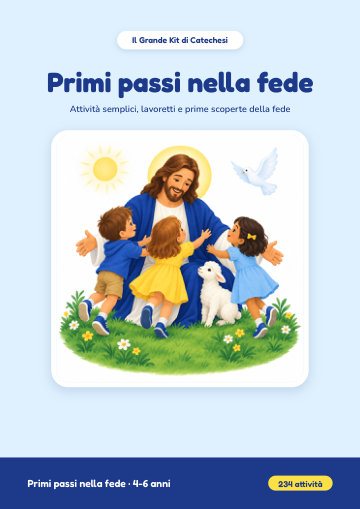
4-6 anniPrimi passi nella fede
234 attività semplici per i più piccoli: disegni da colorare, labirinti, puntini da unire, attività di ritaglio e piccoli lavoretti. 237 pagine.
Scaricate il PDFAprite nel browser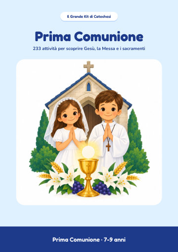
7-9 anniPrima Comunione
233 attività per scoprire Gesù, la Messa e i sacramenti, con le soluzioni. 266 pagine.
Scaricate il PDFAprite nel browser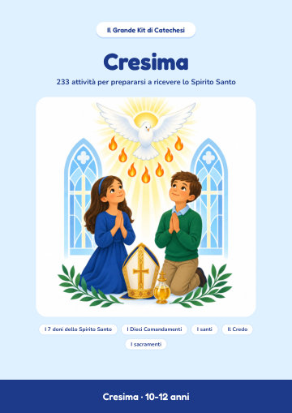
10-12 anniCresima
233 attività per prepararsi a ricevere lo Spirito Santo, con le soluzioni. 245 pagine.
Scaricate il PDFAprite nel browser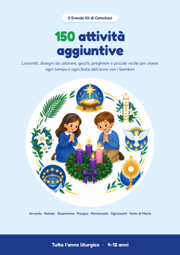
4-12 anni150 attività aggiuntive
I tempi forti e le feste dell’anno: Avvento, Natale, Quaresima, Pasqua, Pentecoste, Ognissanti e le feste di Maria. 152 pagine.
Scaricate il PDFAprite nel browserI vostri 7 bonus
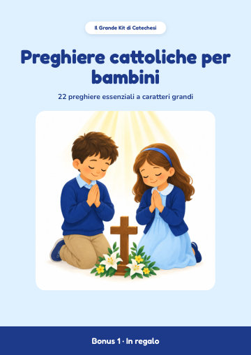
Bonus 1Preghiere cattoliche per bambini
22 preghiere essenziali a caratteri grandi. 23 pagine.
Scaricate il PDFAprite nel browser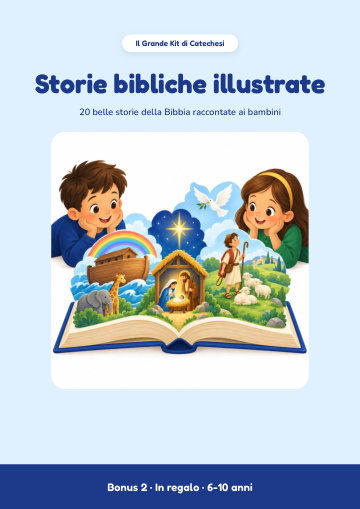
Bonus 2Storie bibliche illustrate
20 storie della Bibbia da leggere con i bambini dai 6 ai 10 anni. 43 pagine.
Scaricate il PDFAprite nel browser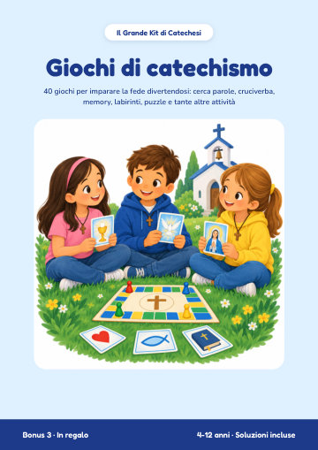
Bonus 3Giochi di catechismo
40 giochi: cerca parole, cruciverba, labirinti, memory e quiz, con le soluzioni. 50 pagine.
Scaricate il PDFAprite nel browser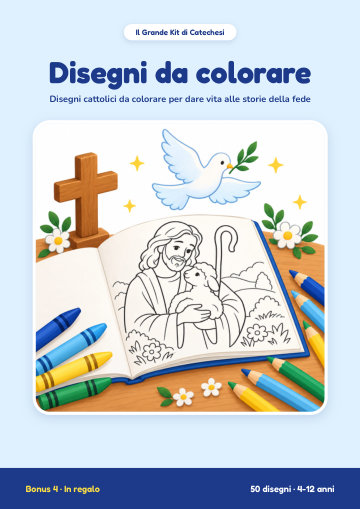
Bonus 4Disegni da colorare
50 disegni della Bibbia e dei santi, ciascuno con un versetto o una frase da ricordare. 51 pagine.
Scaricate il PDFAprite nel browser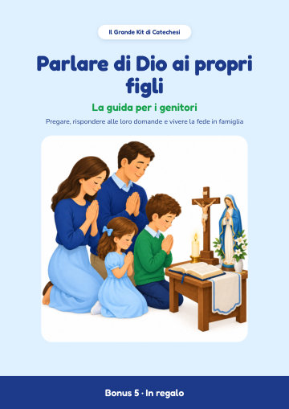
Bonus 5Parlare di Dio ai propri figli
La guida per i genitori: pregare in famiglia, rispondere alle grandi domande, idee per ogni età. 22 pagine.
Scaricate il PDFAprite nel browser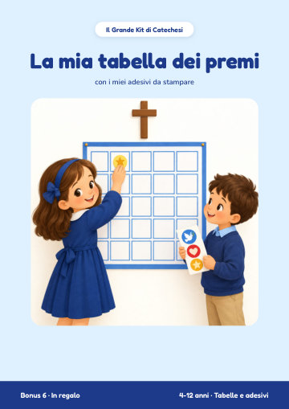
Bonus 6La mia tabella dei premi
Tabelle della settimana e del mese, cammini di Avvento e Quaresima, adesivi e diploma. 13 pagine.
Scaricate il PDFAprite nel browser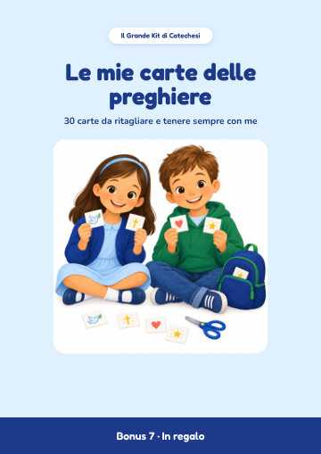
Bonus 7Le mie carte delle preghiere
30 carte da ritagliare: preghiere, parole della Bibbia e frasi di santi. 8 pagine.
Scaricate il PDFAprite nel browserDa dove cominciare
- Scaricate il libretto adatto all’età del bambino: Primi passi nella fede, Prima Comunione o Cresima.
- Stampate le pagine in A4, al 100% (“dimensioni effettive” nella finestra di stampa). Ogni attività sta in una pagina.
- Tenete i bonus a portata di mano: le preghiere, le storie e i giochi accompagnano ogni incontro.
Per uso personale, in famiglia, in parrocchia o in classe. La rivendita e la ridistribuzione sono vietate.